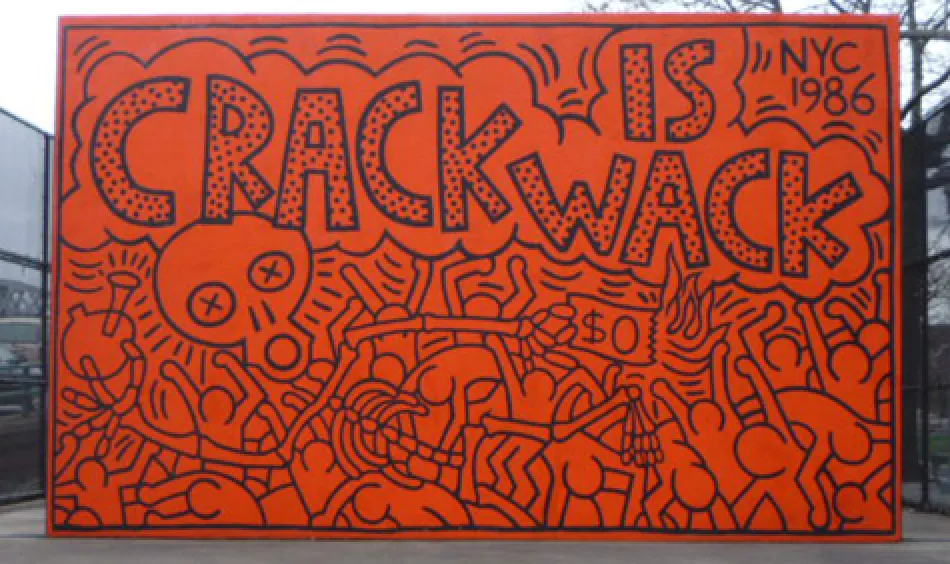

"Crack is Wack"
Keith Haring
Conscient de l'épidémie de drogue qui atteint la ville de New York, en 1986, K.Haring réalise la fresque The Crack is Wack en protestation. Sans autorisation, il peint les murs d'un terrain de handball sur la 2nd Avenue, pour mettre en garde contre les effets néfastes du crack. Le département des parcs a reconnu l'artiste et l'œuvre a été placée sous la protection et la compétence du département des parcs de la ville. La fresque est même restaurée en 2007. Haring a été arrêté pour vandalisme, la pièce a réussi à faire le tour des médias. À l'époque, le président Reagan était déterminé à lutter contre la drogue et la fresque était digne d'intérêt et d'actualité.
 EN
EN